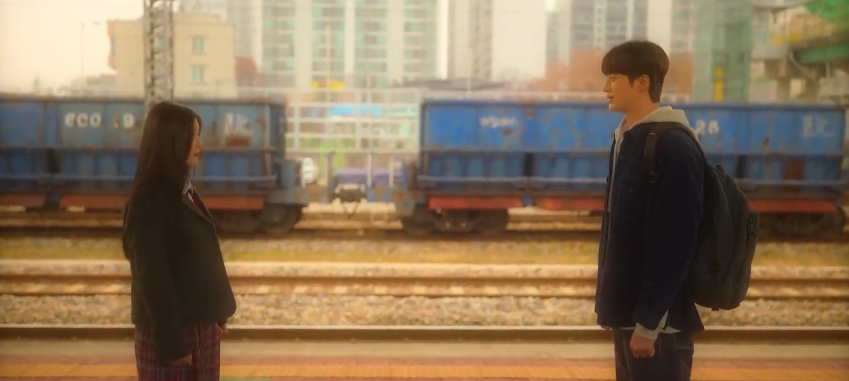

20th Century Girl (Korean: 20세기 소녀; RR: 20segi Sonyeo) is a South Korean romance drama film written and directed by Bang Woo-ri in her feature film debut, starring Kim Yoo-jung, Byeon Woo-seok, Park Jung-woo, and Roh Yoon-seo. The film depicts the friendship and freshness of first love against the backdrop of 1999.
20th Century Girl
Important character
Na Bo-Ra (adult)
Poong Woon-Ho
Kim Yeon-Doo
Baek Hyun-Jin
20th Century Girl (Korean: 20세기 소녀; RR: 20segi Sonyeo) is a South Korean romance drama film written and directed by Bang Woo-ri in her feature film debut, starring Kim Yoo-jung, Byeon Woo-seok, Park Jung-woo, and Roh Yoon-seo. The film depicts the friendship and freshness of first love against the backdrop of 1999.
The premise of 20th Century Girl is this: Na Bo-ra is seventeen and loyal to her best friend, Yeon-du. However, Yeon-du is leaving for the United States soon, as she needs a specific kind of surgery for her heart. Bo-ra is left with instructions from her friend: Yeon-du has fallen in love with a boy named Baek Hyun-jin, as he did a kind act for her. it is up to Bo-ra now to find out who Hyun-jin is, report back on his every move to her best friend, and make sure when the day comes, Yeon-du will have a boyfriend in the works. And Bo-ra does so.
Bo-ra's best friend, Yeon-du (Roh Yoon-seo), who has been preparing to visit the US for heart surgery, suddenly declares that she cannot leave as she has fallen in love with a boy from their school whose name she knows as Baek Hyun-jin (Park Jung-woo). Bo-ra promises that she will follow Baek Hyun-jin, find out everything about him, and email what she discovers. Reassured, Yeon-du departs.
At school, Bo-ra starts to follow Hyun-jin. One day, she overhears that Hyun-jin and his best friend Poong Woon-ho (Byeon Woo-seok) will join the broadcasting club at school, so she successfully auditions to join the club. While Woon-ho joins the club, Hyun-jin does not. Bo-ra tries to get close to Woon-ho in order to observe Hyun-jin.
Poong Woon-ho is a new student who joins the Bo-ra’s school at the start of the new academic year. His parents are divorced, and he lives with his father in Korea. Meanwhile, Woon-ho’s mother and younger brother live in New Zealand. Woon-ho is quiet and depressed after his parent’s divorce but starts smiling after developing a crush on Bo-ra. Eventually, the duo begins dating, but Bo-ra ends their romance to protect Yeon-du’s feelings.

Bo-ra begins to stalk Hyun-jin throughout the school, finding out that he is kind of annoying in the process. She befriends him and joins the Broadcasting Club on campus in order to do so,
meeting his other friend, Woon-ho, in the process. Woon-ho is mercilessly teasing Bo-ra for what seems to be a petty crush on Hyun-jin, and even makes her steal an adult movie from her family’s store for him to watch. However, through their time together, Bo-ra and Woon-ho fall in love with each other.
Thing first appears when Wednesday Addams and her parents arrive at Nevermore Academy. Later, right before Wednesday's parents were about to leave, Thing sneakily followed Wednesday and went to her, wanting to stay. After Wednesday found out that he was following her, she gave him the option to either get stuck in a drawer for the whole semester or just follow her orders, which Thing decides to obey his master's orders. Several episodes later, Thing gets stabbed by Laurel Gates off-screen but is resuscitated by Wednesday and her uncle Fester Addams.
Hyun-jin, mistaken that Bo-ra is interested in him, asks her to date him only to be rejected by her. Meanwhile, Bo-ra realizes that she has fallen in love with Woon-ho, who has developed feelings for her as well.
When Yeon-du returns to Korea after successful heart surgery, they realize that Bo-ra has been following the wrong boy, and that the real 'Baek Hyun-jin' whom Yeon-du loves is actually Poong Woon-ho, a confusion caused by the boy wearing his friend's school jacket bearing his name tag.
Yeon-du returns, and a mistake has been made: she actually meant that she had a crush on Woon-ho, not Hyun-jin. That day, she mistook Woon-ho for Hyun-jin because Woon-ho, who had arrived abroad from New Zealand, was wearing Hyun-jin’s school uniform with his name on it. Bo-ra is heartbroken by this, and she hacks into her friend’s email in order to delete the email where she professes to her friend that she was in love with Woon-ho.
Thus begins the angsty drama part of this movie. Bo-ra pretends not to like Woon-ho anymore, despite clearly being smitten with him, ending up with a lot of tears for the both of them throughout. This can’t be hidden from Yeon-du for long,
and when she finds out about her friend’s crush, she arranges for the two of them to have time alone together. Loyal to her friend, and protective because of her health condition, Bo-ra conceals that she loves the same Woon-ho.
Then Bo-ra starts to avoid Woon-ho so that their blossoming relationship will end, but through Hyun-jin, Yeon-du learns that Woon-ho and Bo-ra like each other. A tearful Yeon-du tells Bo-ra that she can give up Woon-ho for the sake of their friendship.
Thus begins the angsty drama part of this movie. Bo-ra pretends not to like Woon-ho anymore, despite clearly being smitten with him, ending up with a lot of tears for the both of them throughout. This can’t be hidden from Yeon-du for long,
However, it has become too late, as Woon-ho needs to return to New Zealand because his family lives there. The two of them end up making amends before he leaves, and promise to meet up at a prestigious Korean university for school.

Meanwhile, Woon-ho prepares to move back to New Zealand to resume life with his mother and younger brother. On the day of his departure, with the help of Yeon-du and Hyun-jin, Bo-ra arrives at the train station just in time for them to confess their feelings before separating. They maintain contact
while Woon-ho plans to attend university in Seoul. Without explanation, Woon-ho stops answering Bo-ra's emails; she never hears from him again. Heartbroken, confused, and angry, Bo-ra tries to get over him.
But not long after the year 2000 hits, Woon-ho stops responding to Bo-ra’s emails. She gets into the school they promised they would go to together, looks for him constantly on campus. The times slowly change with the increase of technology.
There are a lot of scenes where she is shown trying to get over him, going on blind dates, but ends up in tears because of how she cannot forget Woon-ho. It isn’t until many years in the future does she discover the truth from his little brother,
Time passes as Bo-ra attends university and matures. In 2019, she receives an invitation to an art exhibition from a person named Joseph, who turns out to be Woon-ho's younger brother, from whom she learns that Woon-ho died in some kind of an accident all those years ago. Joseph thanks Bo-ra for remembering Woon-ho and says that the happiest moments in Woon-ho's short life were spent in her company. As the film ends, Bo-ra views a video made by Woon-ho that depicts their time together.